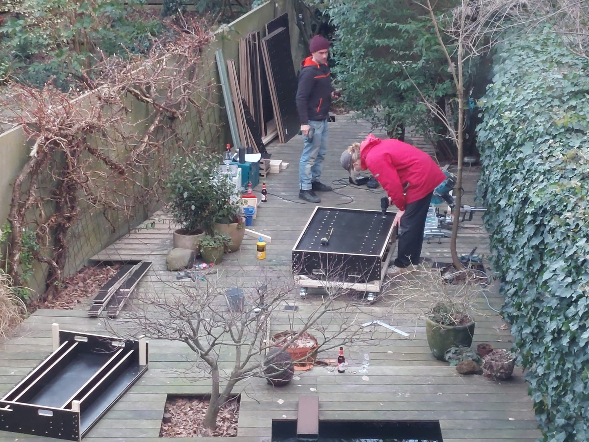

De kunst van hot pipe enten
Vier jaar leren, in één pagina

Dit is geen tutorial van een expert. Het is een verslag van twee amateurs die op een balkon en daarna op zes are grond hebben uitgevogeld wat werkt en wat niet. Bedoeld om jou ook gewoon te laten beginnen.
Wat is hot pipe enten
Het principe is simpel. Bij een normale ent gebeurt het callus-werk — de samengroei van enthout en onderstam — heel langzaam, zeker bij soorten als walnoot of hazelaar die in koude winterse omstandigheden bijna niet samenkomen. Verwarm je daarentegen alleen de entplek lokaal, dan versnel je dat werk drastisch, terwijl de rest van de boom in winterrust blijft.
Dat doe je door de ent in een geïsoleerde buis te leggen die intern op temperatuur wordt gehouden. De wortels steken aan de ene kant naar buiten, in koele lucht of bodem. De knoppen steken aan de andere kant naar buiten, ook in koele lucht. Alleen de paar centimeter rond de ent zelf zit in de warmte. Daar wordt callus gevormd. Als alles goed gaat, zijn enthout en onderstam binnen een paar weken vergroeid.
De temperatuur
Streef naar 28 graden Celsius. Niet 25, niet 32. Zo constant mogelijk.
Hoger schaadt het cambium. Lager vertraagt het callus-werk tot een punt waarop er even goed niets gebeurt. We hebben veel tijd verloren door te denken dat "ongeveer warm" volstaat. Het volstaat niet.
Sensoren — wat we leerden
We zijn begonnen met MPT100-sensoren. Goedkoop en wijdverbreid, maar de resolutie is niet hoog en de drift is groot genoeg om problemen te geven. In een goede week werkte het, in een slechte week stond de buis op 31 graden zonder dat we het door hadden.
Later zijn we overgestapt op MPT1000. Hogere resolutie, betere signaal-ruisverhouding. Dat was een duidelijke verbetering.
Maar het belangrijkste is dit: een elektrische sensor alleen volstaat niet. Gebruik altijd een tweede referentiethermometer om de elektrische sensor mee te kalibreren. Een goede kwikthermometer of een geijkte digitale meter. Pas wanneer je twee bronnen hebt die elkaar bevestigen, weet je wat je instelling op de aansturing eigenlijk doet. We hebben een hele winter op verkeerd geijkte sensoren gestookt voor we dat doorhadden.
Vochtigheid — vermiculiet en 80 procent
De andere grote vijand van een ent in een hot pipe is uitdroging. De buis lekt warmte naar buiten, en met die warmte verdwijnt ook vocht. Een hot pipe zonder vochthuishouding is feitelijk een droger.
We hebben vermiculiet gebruikt in de buissecties om vocht op te bouwen. Vermiculiet houdt water vast, geeft het traag af, en houdt de lokale luchtvochtigheid hoog zonder dat het condens of nat hout oplevert. Streef naar rond de 80 % luchtvochtigheid in de buis.
Hoe controleer je dat? Een eenvoudige hygrometer in de buis steken werkt, mits ze betrouwbaar is. Wij zijn meer afgegaan op gevoel — vermiculiet die nog vochtig aanvoelt is meestal goed, vermiculiet die kraakdroog is, is te laat.
De afdichting — wetsuit-stof
Hier hebben we onze grootste vooruitgang geboekt nadat we ophielden met improviseren. De openingen van de buis — daar waar de enten naar buiten steken — moeten strak en isolerend afgesloten worden, anders verlies je warmte én vocht.
We zijn uitgekomen op stroken van een schuimrubber-materiaal vergelijkbaar met wetsuit-stof. Soepel genoeg om strak rond een ent te plooien, dik genoeg om warmte te houden, en bestand tegen het vocht in de buis. Karton wordt nat en pluist. Doek isoleert niet. Wetsuit-stof werkt.
Water? Nee.
Dit is een van de fouten die ik in het eerste jaar maakte: ik dacht dat ik de enten zo nu en dan moest water geven. Doe dat niet.
Het water dat je aanbrengt is, hoe goed bedoeld ook, te koud voor het lokale microklimaat in de buis. Het geeft de boom een schok, het verstoort de temperatuur die je net zo zorgvuldig hebt opgebouwd, en het kost je enten. De vochthuishouding moet komen van de vermiculiet en de afdichting, niet van water dat je achteraf toevoegt.
Hoe lang in de buis
Geen vast getal. Zolang het goed voelt is de meest eerlijke regel die we eruit hebben kunnen halen. In de praktijk: een paar weken voor de meeste soorten.
Wat je wel kunt zien is dat de knoppen beginnen te breken in de buis — er komen kleine witte spruitjes naar buiten. Dat is een teken. Die spruitjes breek je er bij het eruit halen van de ent af; ze zijn niet bruikbaar, ze zijn alleen gevormd omdat de knop reageerde op de warmte. Wat je behoudt zijn de 2 à 3 knoppen die je buiten de buis houdt — dat zijn de knoppen die later normaal moeten uitlopen, in het juiste seizoen.
De callus groeit nog door in de 2 à 3 weken na het uit de buis halen. Wat je in de buis maakt is dus geen klare zaak, het is een vliegende start.
Welke ent
Onze conclusie na vier seizoenen:
- Improved cleft graft — voor ons het beste resultaat. Een grote contactzone, mechanisch stabiel, en in onze ervaring de meest tolerante variant voor onze omstandigheden.
- Splice graft — sluit op het oog mooi, maar bij ons groeiden splice grafts niet goed door in de jaren erna. Ze haakten af in jaar twee of drie. Niet aan te raden voor wie iets duurzaams wil opbouwen.
Per soort
Hazelaar (Corylus avellana op Corylus colurna). Gebruik tweejarige zaailingen als onderstam. Eenjarige zijn te dun. De combinatie met colurna werkt veel betrouwbaarder dan met avellana zelf, omdat colurna dieper wortelt en minder hertakt vanuit de wortel. Het enthout snij je vóór de mannelijke bloei — voor de katjes vormen — en bewaar je in een vochtige plastic zak in de koelkast tot je klaar bent om te enten.
Walnoot. Hier is het andersom: walnoot enthout snij je liefst vers en ent je direct door, omdat walnoot extreem laat ontwaakt en het hout langer levensvatbaar blijft op de boom dan in opslag. Voor de onderstam: een goed gegroeide eenjarige zaailing. Niet ouder. Oudere onderstammen werken slechter, in onze ervaring.
Slot
Begin gewoon. Een mislukte ent kost je een takje, geen oogst.
De grootste vooruitgang die wij hebben gemaakt zat niet in fancy materiaal of dure sensoren, maar in het gewoon weer proberen, jaar na jaar. Vermiculiet kost weinig. Een rolletje wetsuit-strip kost weinig. Een tweede thermometer kost weinig. Wat het kost is geduld — en geduld krijg je alleen door tijd te steken in iets waarvan je het resultaat pas in jaar twee of drie ziet.
Lees verder over hoe het begon, of terug naar De Griffel.